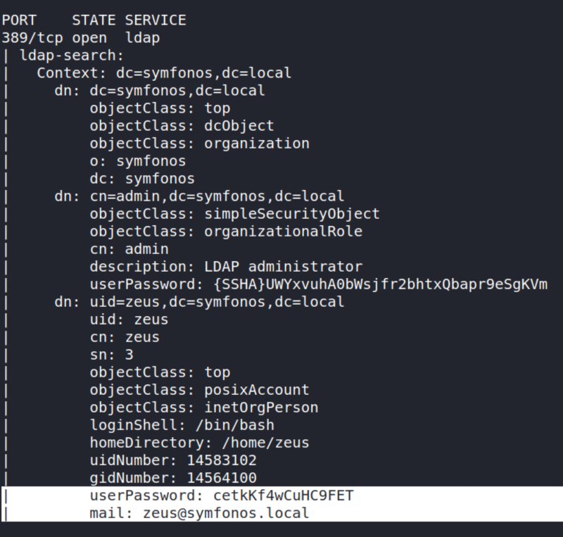

3.4 LDAP Enumeration
We saw in the step 2 that the port number 389 is open for LDAP.
a) Run the following command.
$ nmap 192.168.12.8 -p 389 --script ldap-search --script-args 'ldap.username="cn=admin,dc=symfonos,dc=local", ldap.password="qMDdyZh3cT6eeAWD"'
Output:

We found user information including password.
Username: zeus
Password: “cetkKf4wCuHC9FET”